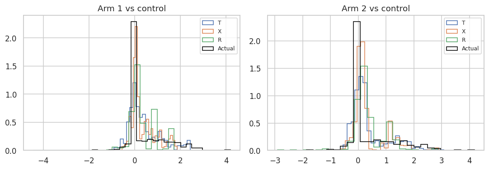
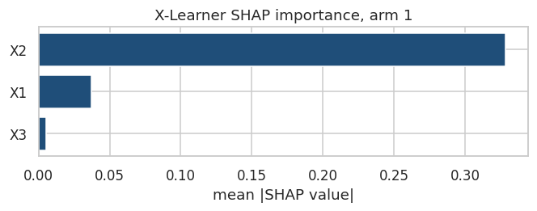
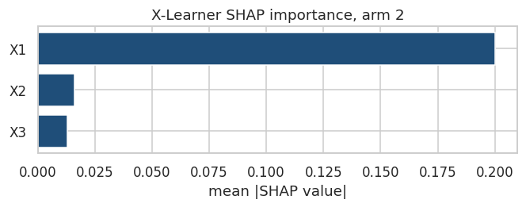

2.2. Meta-Learners with Multiple Discrete Treatments
Overview
Meta-learners extend naturally from the binary setting to the case of multiple discrete treatments, where each unit receives exactly one of \(K \geq 2\) mutually exclusive treatment arms. Denoting the treatment variable as \(T \in \{0, 1, \dots, K-1\}\), with \(T = 0\) designated as the control or reference arm, the estimand of interest becomes a set of \(K - 1\) pairwise contrasts against control:
\[\tau_k(x) = \mathbb{E}[Y(k) - Y(0) \mid X = x], \quad k = 1, \dots, K-1\]
where \(Y(k)\) denotes the potential outcome under treatment arm \(k\). This family of CATE functions characterizes how the effect of each active treatment, relative to control, varies across the covariate space. In principle, one could also target pairwise contrasts between active arms, \(\mathbb{E}[Y(k) - Y(k') \mid X = x]\) for \(k \neq k'\), though the contrast-versus-control framing is most common in applied work and maps cleanly onto the meta-learner machinery developed for the binary case.
The multi-arm setting introduces several challenges that do not arise — or arise less acutely — with binary treatments.
Multinomial propensity scores. When treatment is assigned among \(K\) arms, the propensity score generalizes to a vector of conditional probabilities:
Estimation of \(\mathbf{e}(x)\) requires a multinomial classification model — such as multinomial logistic regression, softmax-output gradient boosting, or a multiclass random forest — rather than a single binary classifier. The arm-specific probabilities \(e_k(x)\) enter directly into doubly robust and propensity-weighted estimators (X-Learner, R-Learner, DR-Learner), and their quality has a first-order impact on CATE estimation accuracy. In some designs, particularly when active arms are defined post hoc by splitting a treated group, binary propensity scores for “any treatment” may suffice, but this approximation should be used with care.
Arm-level overlap and sparsity. A critical assumption for identification is positivity (or overlap): for each arm \(k\),
\[e_k(x) > 0 \quad \text{for all } x \text{ in the support of } X\]
With many arms, positivity violations become more likely simply because each arm captures a smaller fraction of the sample. Sparse treatment arms — those with few observations — lead to poorly estimated outcome models and propensity scores for that arm, inflating the variance of the corresponding CATE estimates. Practitioners should routinely inspect the marginal distribution of arm sizes and the effective sample size available for each arm-specific model fit.
Covariate overlap across arms. Even when each arm has adequate marginal sample size, the covariate distributions across arms may diverge substantially. This is particularly relevant in observational studies where treatment selection is strongly confounded. For each pairwise contrast \(\tau_k(x)\), overlap diagnostics — such as the distribution of \(e_k(x) / e_0(x)\) or standardized mean differences in \(X\) between arm \(k\) and control — should be examined before trusting CATE estimates in regions of thin support.
Adapting Meta-Learner Variants to the Multi-Arm Setting
Each meta-learner from the binary case extends to \(K\) arms, though the adaptations vary in complexity.
S-Learner. A single outcome model \(\hat{\mu}(x, t)\) is fit on the full sample with \(T\) encoded as a categorical feature (via dummy coding or an embedding). The CATE for arm \(k\) is recovered as:
This is the simplest extension and inherits the same weakness as in the binary case: tree-based base learners may fail to adequately represent the treatment dimension when treatment effects are small relative to outcome variation.
T-Learner. Separate outcome models \(\hat{\mu}_k(x)\) are fit on each arm’s subsample independently, and the CATE is estimated as:
This requires fitting \(K\) models in total. The approach is straightforward but amplifies the imbalance problem: with \(K\) arms of roughly equal size, each arm-specific model is trained on approximately \(1/K\) of the data, which can severely degrade performance for large \(K\) or small total sample sizes.
X-Learner. The cross-fitting logic extends arm by arm: for each active arm \(k\), the binary X-Learner pipeline is run using arm \(k\) and the control arm as the two groups, with the arm-specific propensity score \(e_k(x)\) used for weighting. This produces \(K - 1\) independent CATE estimates \(\hat{\tau}_k^X(x)\). The X-Learner’s efficiency advantage under imbalance carries over directly and is particularly valuable here, since each arm-versus-control comparison may involve substantially unequal group sizes.
R-Learner. The Robinson decomposition generalizes by residualizing against arm-specific nuisance functions. For each contrast \(k\) versus \(0\), one restricts attention to units with \(T \in \{0, k\}\) and applies the standard binary R-Learner, or alternatively uses a fully multivariate formulation that residualizes outcomes against \(\hat{\mu}(x) = \mathbb{E}[Y \mid X]\) and treatments against their multinomial propensity predictions. The orthogonalization property carries over, making the R-Learner relatively robust to nuisance model misspecification in each arm-specific estimation problem.
DR-Learner. The doubly robust AIPW pseudo-outcome for contrast \(k\) versus \(0\) generalizes to:
A separate regression of \(\hat{\phi}_i^k\) on \(X_i\) yields the CATE estimate for arm \(k\). The doubly robust property holds arm by arm: each \(\hat{\tau}_k^{DR}(x)\) is consistent if either the outcome model for arm \(k\) or the propensity scores \(e_k(x)\) and \(e_0(x)\) are correctly specified. Cross-fitting across arms is essential to avoid overfitting bias in the pseudo-outcome construction.
Practical Considerations
The choice among meta-learners in the multi-arm setting follows the same logic as in the binary case, with additional weight given to arm-level sample sizes and propensity score quality. A few practical guidelines:
When arm sizes are roughly balanced and the number of arms \(K\) is small, the T-Learner is a reasonable baseline.
When arm sizes are unequal — which is common in observational studies — the X-Learner or DR-Learner is preferred for its efficiency and robustness.
When propensity score estimation is reliable and statistical inference on \(\tau_k(x)\) is required, the DR-Learner provides formal asymptotic guarantees.
The R-Learner is attractive when confounding is a primary concern and one wishes to minimize the impact of nuisance model misspecification through orthogonalization.
Regardless of learner choice, arm-level overlap diagnostics and effective sample size checks should precede any CATE estimation in the multi-arm setting.
Part 0: PyCausalML — multiple discrete treatments
For the binary DGP we use simulate_nuisance_and_easy_treatment(), which matches synthetic_data(mode = 1, ...) in R/dataset.R (difficult nuisance, easy treatment). The exported name synthetic_data() in this package may refer to a mode-2-only generator (R/synthetic_data.R); calling the explicit simulator avoids ambiguity. We then randomly assign treated units to arm 1 or 2 (80% / 20%), giving control (0), treatment_a (1), treatment_b (2).
Note: Arms are created after the binary DGP, so the latent effect tau is the same for both arms; do not interpret overlap plots or RMSE here as a benchmark for multi-arm DGP design. For known arm-specific CATEs and multinomial propensities, use Part A.
Generate synthetic data
Simulate nuisance-and-easy treatment and split treated units into two arms
Code
import subprocessimport sysfrom pathlib import Pathdef _repo_root() -> Path: here = Path.cwd().resolve()for cand in [here, *here.parents]:if (cand /"pyproject.toml").is_file() and (cand /"src"/"pycausalml").is_dir():return candraiseFileNotFoundError("PyCausalML repository was not found. Run this notebook from the repository." )root = _repo_root()try:import pycausalml # noqa: F401import causaldata # noqa: F401import matplotlib # noqa: F401import xgboost # noqa: F401exceptImportError: subprocess.check_call([ sys.executable, "-m", "pip", "install", "-q", "-e", f"{root}[plot,boost,shap]","statsmodels", "causaldata", ])print("PyCausalML ready.")%matplotlib inlineimport warningswarnings.filterwarnings("ignore")import matplotlib.pyplot as pltimport numpy as npimport pandas as pdimport seaborn as snsfrom pathlib import Pathfrom pycausalml import ( DRLearner, DomainAdaptationLearner, LinearDML, RLearner, SLearner, SparseLinearDML, TLearner, XLearner, explain_cate, synthetic_data,)from pycausalml.data import make_multiarm_datafrom pycausalml.double_machine_learning import CausalForestDML, PartiallyLinearDMLsns.set_theme(style="whitegrid")plt.rcParams["figure.dpi"] =110N_EST =25print("Imported PyCausalML")def ate_row(name, model, X): cate = np.asarray(model.predict(X), dtype=float) info = model.average_treatment_effect(X) est =float(info["estimate"]) se =float(info["std.err"])ifnot np.isfinite(se): se =float(np.std(cate, ddof=1) / np.sqrt(len(cate))) est =float(np.mean(cate))return {"learner": name,"ate": est,"se": se,"ci_lower": est -1.96* se,"ci_upper": est +1.96* se, }def abs_pct_ate(pred, truth): denom =abs(float(np.mean(truth)))if denom <1e-8:return np.nanreturn100.0*abs(float(np.mean(pred) - np.mean(truth))) / denomdef kl_divergence(pred, truth, bins=15): pred = np.asarray(pred, dtype=float) truth = np.asarray(truth, dtype=float) lo =float(min(pred.min(), truth.min())) hi =float(max(pred.max(), truth.max()))ifnot np.isfinite(lo) or hi <= lo:return np.nan hp, _ = np.histogram(pred, bins=bins, range=(lo, hi)) hq, _ = np.histogram(truth, bins=bins, range=(lo, hi)) hp = hp.astype(float) +1e-3 hq = hq.astype(float) +1e-3 hp /= hp.sum() hq /= hq.sum()returnfloat(np.sum(hp * np.log(hp / hq)))def cumulative_gain(y, w, score): order = np.argsort(-np.asarray(score, dtype=float)) y = np.asarray(y, dtype=float)[order] w = np.asarray(w)[order] n =len(y) frac = np.arange(1, n +1) / n gain = np.empty(n)for i inrange(n): ww = w[: i +1] yy = y[: i +1] n1 =int((ww ==1).sum()) n0 =int((ww ==0).sum()) gain[i] =0.0if n1 ==0or n0 ==0else (yy[ww ==1].mean() - yy[ww ==0].mean()) * (i +1) / nreturn frac, gaindef tutorial_file(name: str) -> Path: here = Path.cwd().resolve()for cand in [here, *here.parents]:for rel in ( Path("Tutorials") /"05_02_Meta_Learners"/"data"/ name, Path("data") / name, ): path = cand / relif path.is_file():return pathraiseFileNotFoundError(name)base = synthetic_data(mode=2, n=900, p=6, sigma=1.0, random_state=1)X0, y0, tau0 = base["X"], base["y"], base["tau"]w0 = base["w"].copy()treated = np.flatnonzero(w0 ==1)pick = np.random.default_rng(1).choice(treated, size=int(0.2*len(treated)), replace=False)w0[pick] =2names0 = [f"X{i+1}"for i inrange(X0.shape[1])]print("Arm counts", {int(a): int((w0 == a).sum()) for a in np.unique(w0)})print("Latent tau is shared across arms in Part 0; mean", round(float(tau0.mean()), 3))
PyCausalML ready.
Imported PyCausalML
Arm counts {0: 425, 1: 380, 2: 95}
Latent tau is shared across arms in Part 0; mean 0.47
S-Learner (multiple treatments)
SLearner supports multiple arms: one contrast per non-control level. predict() returns a matrix with one column per treatment arm vs control.
ATE
ATE with confidence intervals
ATE with bootstrap CIs
Use estimate_ate(learner_s_m, X2, treatment_multi, y2, return_ci = TRUE, bootstrap_ci = TRUE, n_bootstraps = 100L, bootstrap_size = 5000L) for a full bootstrap (fewer iterations for quick tests).
CATE
CATE with confidence intervals
Use fit_predict(learner_s_m, X2, treatment_multi, y2, return_ci = TRUE, ...); returned objects include te, te_lower, te_upper (matrices when multiple arms).
T-Learner (multiple treatments)
TLearner is binary in PyCausalML; fit one learner per arm (control vs 1, control vs 2).
ATE with confidence intervals
CATE
CATE with confidence intervals
Use fit_predict(learner_s_m, X2, treatment_multi, y2, return_ci = TRUE, ...); returned objects include te, te_lower, te_upper (matrices when multiple arms).
T-Learner (multiple treatments)
TLearner is binary in PyCausalML; fit one learner per arm (control vs 1, control vs 2).
learner ate se ci_lower ci_upper true_ate
S-Learner arm 1 0.078 0.004 0.071 0.086 0.463
T-Learner arm 1 0.378 0.025 0.330 0.427 0.463
X-Learner arm 1 0.361 0.019 0.325 0.398 0.463
R-Learner arm 1 0.392 0.087 0.221 0.563 0.463
S-Learner arm 2 0.055 0.003 0.050 0.060 0.432
T-Learner arm 2 0.372 0.029 0.316 0.429 0.432
X-Learner arm 2 0.331 0.025 0.282 0.379 0.432
R-Learner arm 2 0.702 0.341 0.035 1.370 0.432

Part A: Synthetic data, problem formulation, X- and DR-learners
Generate synthetic multi-arm data
We simulate \(K=3\) arms with multinomial assignment, known \(\tau_1(x)\), \(\tau_2(x)\) versus control, and store true propensities for diagnostics.
DGP function and draw df_multi
Code
draw = make_multiarm_data(n=900, random_state=11)Xa, ya, wa = draw["X"], draw["y"], draw["w"]tau1, tau2 = draw["tau1"], draw["tau2"]names_a = [f"X{i+1}"for i inrange(Xa.shape[1])]print("Arm counts", {int(a): int((wa == a).sum()) for a in np.unique(wa)})print("True mean contrasts", round(float(tau1.mean()), 3), round(float(tau2.mean()), 3))
Arm counts {0: 294, 1: 305, 2: 301}
True mean contrasts 1.01 -0.396
Problem formulation
For \(K\) arms (\(T \in \{0,1,\dots,K-1\}\)), we estimate \(K-1\) CATE functions relative to control (\(T=0\)):
\[\tau_k(x) = \mathbb{E}[Y(k) - Y(0) \mid X = x], \quad k = 1,\dots,K-1\]
Challenges include multinomial propensities\(e_k(x) = P(T=k \mid X=x)\), sparse arms, and careful cross-fitting when you split data (illustrated in Part B).
X-Learner extension for multiple treatments
We extend the X-learner using outcome models per arm, imputed treatment effects, propensity-based weights, and a CATE regression per non-control arm (learner="rf").
Multi-arm X-Learner implementation and in-sample RMSE
DR-Learner for multiple treatments
Doubly robust scores use estimated multinomial propensities and outcome models per arm; we regress the score on \(X\) for each contrast vs. control.
Multi-arm DR-Learner implementation and in-sample RMSE
Code
arm_models = {}cmp_rows = []truth = {1: tau1, 2: tau2}for arm in (1, 2): Xc, wc, yc = contrast(Xa, wa, ya, arm) true = truth[arm][(wa ==0) | (wa == arm)]for label, cls in (("X", XLearner), ("DR", DRLearner), ("T", TLearner), ("R", RLearner)): model = cls(learner="gbr", n_estimators=N_EST, random_state=10+ arm) model.fit(Xc, wc, yc, feature_names=names_a) pred = model.predict(Xc) arm_models[(label, arm)] = model cmp_rows.append({"learner": label,"arm": arm,"ate": float(np.mean(pred)),"true_ate": float(np.mean(true)),"rmse": float(np.sqrt(np.mean((pred - true) **2))), })print(pd.DataFrame(cmp_rows).round(3).to_string(index=False))
learner arm ate true_ate rmse
X 1 1.020 1.007 0.162
DR 1 1.016 1.007 0.148
T 1 1.036 1.007 0.206
R 1 1.013 1.007 0.170
X 2 -0.416 -0.421 0.100
DR 2 -0.401 -0.421 0.142
T 2 -0.438 -0.421 0.137
R 2 -0.407 -0.421 0.140
Part B: Diagnostics, validation, and learner comparison
Holdout RMSE (X-Learner vs DR-Learner)
We split units into train and validation sets, fit both pipelines on the training set only, and report RMSE of \(\hat{\tau}_k\) vs. true \(\tau_k\) on the validation rows (mirrors the train/validation spirit of notebook 02).
learner arm rmse
X 1 0.149
DR 1 0.198
X 2 0.123
DR 2 0.183
Overlap diagnostics
For multiple arms, overlap means each arm has sufficient probability mass across the covariate space; we check that no propensity \(e_k(x)\) is too close to 0 or 1.
Propensity histograms and trimming counts
Code
from sklearn.linear_model import LogisticRegressionprop_model = LogisticRegression(max_iter=400)# one-vs-rest propensities on the full samplefig, axes = plt.subplots(1, 3, figsize=(11, 3.4))for ax, arm inzip(axes, (0, 1, 2)): clf = LogisticRegression(max_iter=400) clf.fit(Xa, (wa == arm).astype(int)) score = clf.predict_proba(Xa)[:, 1] ax.hist(score, bins=25, color="#2E86AB") ax.set_title(f"P(T={arm} | X)")fig.tight_layout()plt.show()print("Share of scores outside (0.05, 0.95):")for arm in (0, 1, 2): clf = LogisticRegression(max_iter=400).fit(Xa, (wa == arm).astype(int)) score = clf.predict_proba(Xa)[:, 1]print(arm, round(float(((score <0.05) | (score >0.95)).mean()), 3))
Standardized mean differences (SMD) for each treatment arm vs. control, before and after multinomial IPW-style weighting (same spirit as balance checks in notebook 02).
Part C: SHAP and interpretability (PyCausalML per-arm X-Learner)
SHAP summarizes how each covariate contributes to predicted CATE \(\hat{\tau}(X)\) for a fitted model. Notebook 02 uses explain_cate() with binary S/T/X/R learners. With \(K>2\) arms, PyCausalML fits one X-Learner per contrast (control vs. arm \(k\)); we illustrate XGBoost base learners and permutation SHAP for arm 1 and arm 2 (same workflow as Part C in notebook 02).
SHAP: fit per-arm X-Learners (XGBoost)
Code
explanations = {}for arm in (1, 2): Xc, wc, yc = contrast(Xa, wa, ya, arm) model = XLearner(learner="xgb", n_estimators=N_EST, random_state=arm) model.fit(Xc, wc, yc, feature_names=names_a) explanations[arm] = explain_cate(model, Xc, max_samples=20, n_permutations=5, random_state=arm)print("Arm", arm, np.round(explanations[arm].importance(), 3))
Arm 1 [0.037 0.328 0.005]
Arm 2 [0.2 0.016 0.013]
SHAP: permutation values with `` parallel backend
SHAP: beeswarm importance plots
Code
for arm, exp in explanations.items(): exp.plot_importance(title=f"X-Learner SHAP importance, arm {arm}") plt.show()


Part D: Use case with Lung data set
The lung data from this tutorial (data/lung.csv) describe advanced lung cancer patients (covariates such as age, sex, and ECOG performance status; observed survival time). There is no treatment column in the published data. For a three-arm illustration we simulate assignment and a secondary binary outcome, following the same recipe as in 09-multi-arm-causal-boost-r.qmd:
placebo (baseline), A, B: multinomial assignment with probabilities \((0.4, 0.3, 0.3)\).
log_time: \(\log(\texttt{time})\) as a continuous outcome (positive times only; rows with missing time are dropped).
health_status: Bernoulli draw with baseline probability \(0.3\), increased by \(0.10\) on arm A and \(0.15\) on arm B (treatment-dependent probabilities).
PyCausalML meta-learners expect a numeric control code 0 when control_name = 0 (factors are coerced to \(1,\ldots,K\) internally). Below we keep human-readable labels in treatment_arm and map placebo $**, **A$\to 1, B $** in **treatment` for fitting.
Build lung analysis tibble
Simulated arms, outcomes, covariates, and summary tables
S-, T-, X-, and R-Learners on log_time and health_status
As in Part 0, TLearner, XLearner, and RLearner are binary in PyCausalML: we fit one model per contrast (placebo vs A, placebo vs B). SLearner uses a single surface with a treatment indicator per contrast. Simulated assignment does not depend on X, so we fit X- and R-Learners without an external propensity vector (p omitted); in observational settings you would pass estimated propensities when appropriate.
For health_status, random forests uses squared-error loss as a simple tutorial default (not a calibrated probability model).
S-Learner: fit and ATE with CIs (log_time, health_status)
T-, X-, and R-Learners: fits and combined ATE table
Code
def lung_table(y, outcome): rows = []for arm, contrast_name in ((1, "A vs placebo"), (2, "B vs placebo")): Xc, wc, yc = contrast(X_lung, w_lung, y, arm)for label, cls in (("S", SLearner), ("T", TLearner), ("X", XLearner), ("R", RLearner)): model = cls(learner="gbr", n_estimators=N_EST, random_state=3) model.fit(Xc, wc, yc, feature_names=lung_names) row = ate_row(f"{label}-Learner", model, Xc) row["outcome"] = outcome row["contrast"] = contrast_name rows.append(row)return pd.DataFrame(rows)lung_ate = pd.concat([ lung_table(lung["log_time"].to_numpy(dtype=float), "log_time"), lung_table(lung["health_status"].to_numpy(dtype=float), "health_status"),], ignore_index=True)print(lung_ate.round(3).to_string(index=False))
learner ate se ci_lower ci_upper outcome contrast
S-Learner 0.000 0.000 0.000 0.000 log_time A vs placebo
T-Learner -0.078 0.024 -0.124 -0.031 log_time A vs placebo
X-Learner -0.088 0.018 -0.124 -0.052 log_time A vs placebo
R-Learner -0.043 0.163 -0.363 0.276 log_time A vs placebo
S-Learner -0.036 0.001 -0.039 -0.034 log_time B vs placebo
T-Learner -0.152 0.025 -0.201 -0.102 log_time B vs placebo
X-Learner -0.112 0.019 -0.149 -0.074 log_time B vs placebo
R-Learner -0.006 0.240 -0.476 0.464 log_time B vs placebo
S-Learner -0.011 0.001 -0.013 -0.010 health_status A vs placebo
T-Learner -0.063 0.012 -0.086 -0.040 health_status A vs placebo
X-Learner -0.071 0.009 -0.090 -0.053 health_status A vs placebo
R-Learner -0.053 0.099 -0.247 0.142 health_status A vs placebo
S-Learner -0.003 0.001 -0.004 -0.002 health_status B vs placebo
T-Learner 0.047 0.015 0.018 0.076 health_status B vs placebo
X-Learner 0.051 0.011 0.028 0.073 health_status B vs placebo
R-Learner 0.091 0.149 -0.200 0.383 health_status B vs placebo
SHAP for per-arm X-Learner (XGBoost)
Following Part C, we fit XLearner(learner = 'xgb') separately for A vs placebo and B vs placebo, then explain_cate() with permutation-based SHAP when permutation SHAP and PyCausalML SHAP plots are available. As in Part C, a parallel backend + parallel = TRUE speeds up permshap when multiple workers are available. We show log_time and health_status with modest background and explanation set sizes so the notebook stays quick when CAUSALML_FAST_RENDER=TRUE.
SHAP (lung): fit X-Learners per outcome and contrast
SHAP (lung): permutation values, `` parallel, and plots
Summary and conclusions
This tutorial demonstrates how to extend meta-learners for CATE estimation to the multi-arm setting using PyCausalML . We cover: Part 0 on PyCausalML S/T/X/R learners with simulate_nuisance_and_easy_treatment() (mode-1 DGP) and a three-level treatment vector; Part A on synthetic three-arm data with known contrasts and X-Learner / DR-Learner pipelines (learner="rf"); Part B on overlap, balance, calibration, holdout RMSE, and a short decision framework; Part C on SHAP for PyCausalML per-arm X-Learner fits; Part D on lung with simulated placebo / A / B arms, outcomes log_time and health_status, S / T / X / R meta-learners, and SHAP for XGBoost per-arm X-Learners. Multi-arm CATE targets \(K-1\) contrasts vs. control; multinomial propensities and per-arm sample size deserve the same diagnostic discipline as in the binary case.